| Baranyai Benedek | BCOMKG | benedek.baranyai@student.uni-miskolc.hu |
| Harik Zoltán Örs | POZY70 | zoltan.ors.harik@student.uni-miskolc.hu |
| Radó Attila | JX93VX | attila.rado@student.uni-miskolc.hu |
| Ötvös Csongor | RKOW9K | csongor.otvos@student.uni-miskolc.hu |
| Csóka Nándor Gábor | MDX9OH | nandor.gabor.csoka@student.uni-miskolc.hu |
| Dátum | Verziószám | Rövid leírás | Módosította |
|---|---|---|---|
| 2026-11-15 | 0.5 | A kezdeti osztálydiagram, az osztálylista és a funkcionális alrendszerekre bontás elkészítése az SRS alapján. | Baranyai Benedek |
| 2026-11-16 | 1.0 | Az 1.0-s verzió lezárása, alrendszerek pontosítása és csomagdiagram elkészítése. | Radó Attila |
| 2026-11-17 | 1.1 | A Felhasználó- és Jogosultságkezelő, valamint a Számla- és Pénzforgalmi alrendszer statikus, dinamikus és funkcionális modelljének kidolgozása. | Harik Zoltán Örs, Csóka Nándor Gábor |
| 2026-11-18 | 1.2 | A Deviza- és Árfolyamkezelő, valamint a Hiteligénylési és Bírálati alrendszerek modellezése, teljes osztálylisták és UML ábrák véglegesítése. | Baranyai Benedek, Ötvös Csongor |
Jelen dokumentum a Heger Kft. által fejlesztett Heger Banki Rendszer objektumorientált (OO) analízis modelljét tartalmazza. A dokumentáció közvetlenül a H3 fázisban elfogadott Software követelmény specifikáció (SRS) dokumentumra, az abban rögzített 12 használati esetre (UC-01 – UC-12), az aktorokra, valamint a funkcionális és nem funkcionális követelményekre épül.
Az analízis célja a problématér fogalmainak és objektumainak feltárása, a rendszer logikai alrendszerekre bontása, majd az egyes alrendszerek statikus (osztálydiagramok), dinamikus (szekvencia- és állapotdiagramok) és funkcionális (aktivitásdiagramok, folyamatleírások) modelljének elkészítése. Az itt meghatározott osztálystruktúra képezi a későbbi részletes rendszertervezés és az implementáció alapját.
Az SRS használati eseteinek és funkcionális követelményeinek elemzése alapján összegyűjtöttük a banki problématér legfontosabb osztályait, valamint a közöttük fennálló alapvető asszociációs, öröklődési és kompozíciós kapcsolatokat. Ebben a lépésben még csak az osztályok neve, szerepe és a főbb kapcsolatok szerepelnek.
A teljes rendszer kezdeti, elemzési szintű osztálydiagramját az alábbi ábra szemlélteti:
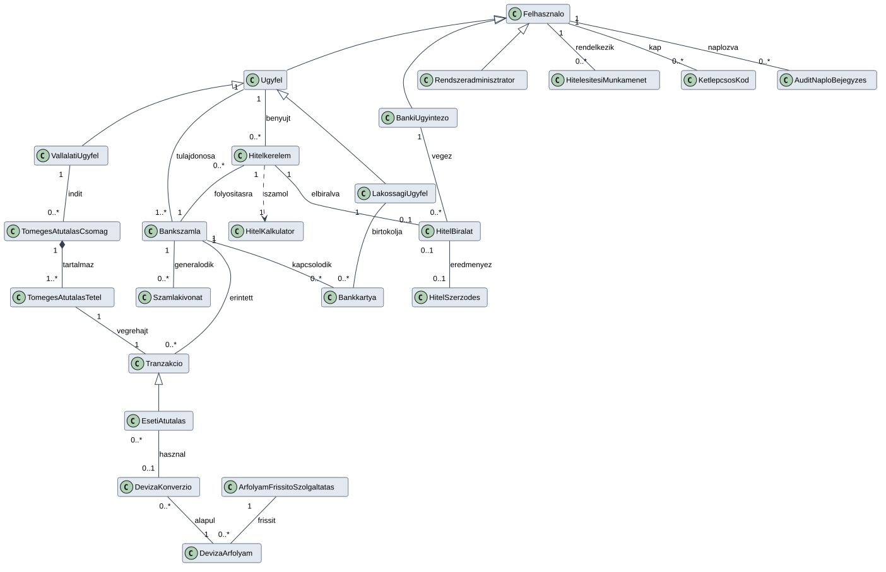
Felhasznalo
A rendszer minden bejelentkezésre jogosult személyének közös ősosztálya, amely a hitelesítési adatokat és a fiókstátuszt fogja össze.
Ugyfel
A banki szolgáltatásokat igénybe vevő ügyfelek általános osztálya, amely összeköti a felhasználót a bankszámlákkal és a hitelkérelmekkel.
LakossagiUgyfel
Magánszemély ügyfelet reprezentáló osztály, aki jogosult a saját bankkártyáinak és napi használati limitjeinek kezelésére.
VallalatiUgyfel
Céges ügyfelet reprezentáló osztály, aki nagy tételszámú tömeges átutalási csomagok indítására jogosult.
BankiUgyintezo
A pénzintézet belső munkatársa, akinek felelőssége a beérkezett hitelkérelmek vizsgálata, elbírálása és az audit naplók ellenőrzése.
Rendszeradminisztrator
Kiemelt jogosultságú üzemeltető, aki a felhasználói fiókok státuszát, jogosultságait és a biztonsági audit naplókat felügyeli.
HitelesitesiMunkamenet
Egy sikeres bejelentkezéshez tartozó állapotmentes JWT munkamenetet reprezentál, tárolva a token azonosítóját, lejáratát és az ügyfél IP-címét.
KetlepcsosKod
A kétlépcsős azonosítás (2FA) során kiküldött, egyszer használatos és időben korlátozott érvényességű ellenőrző kódot kezeli.
AuditNaploBejegyzes
Minden kritikus pénzügyi, adminisztrációs és biztonsági eseményt megváltoztathatatlanul rögzítő naplórekord.
Bankszamla
Az ügyfelek pénzügyi számláját reprezentálja a számlaszámmal, devizanemmel, könyvelt és elérhető egyenleggel, valamint a számlastátusszal.
Tranzakcio
A számlákon végrehajtott pénzmozgások általános ősosztálya, amely rögzíti az összeget, devizanemet, időbélyeget és könyvelési státuszt.
EsetiAtutalas
Belföldi forint vagy deviza alapú egyedi átutalási megbízás, amely tartalmazza a kedvezményezett adatait és a CDV-ellenőrzést.
TomegesAtutalasCsomag
Vállalati ügyfelek által feltöltött vagy rögzített kötegelt átutalási megbízás, amely több tételt fog össze egy jóváhagyás alá.
TomegesAtutalasTetel
Egy tömeges átutalási csomag önálló sora, amely egy konkrét kedvezményezettnek szóló utalási adatot és validációs állapotot tárol.
Szamlakivonat
Egy adott számlához és hónaphoz tartozó lezárt forgalmi kimutatás, amelyből hiteles PDF dokumentum generálható.
Bankkartya
A lakossági bankszámlához kapcsolódó fizetési kártya adatait, napi vásárlási/készpénzfelvételi limitjeit és aktív/zárolt állapotát kezeli.
DevizaArfolyam
Egy devizapár aktuális és historikus vételi, eladási és középárfolyamát tároló entitás.
ArfolyamFrissitoSzolgaltatas
Időzített háttérkomponens, amely a külső árfolyam API-tól lekért adatokból kiszámítja a banki marzsot és frissíti az árfolyamtáblát.
DevizaKonverzio
Eltérő devizanemű átutalások esetén elvégzi és dokumentálja az adott pillanatnyi árfolyamon történő átváltást.
Hitelkerelem
Az ügyfél által benyújtott digitális hiteligénylést, a jövedelmi adatokat, a futamidőt és a bírálati státuszt tárolja.
HitelKalkulator
A hitelösszeg, futamidő és kamatláb alapján kiszámolja a havi törlesztőrészletet, a THM-et és ellenőrzi a JTM-korlátot.
HitelBiralat
A banki ügyintéző által rögzített szakmai döntést (jóváhagyás, elutasítás, hiánypótlás), az indoklást és a digitális aláírást tartalmazza.
HitelSzerzodes
Jóváhagyott hitelkérelem alapján létrejövő aktív hitelszerződés, amely a folyósítást és a törlesztési feltételeket rögzíti.
A kezdeti osztálydiagram alapján a rendszert négy jól elkülöníthető funkcionális alrendszerre bontottuk. Az alrendszerek közötti kapcsolatokat és függőségeket az alábbi UML csomagdiagram mutatja be:
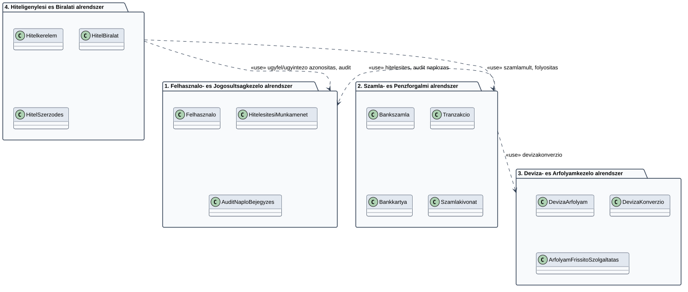
Felelős a felhasználók azonosításáért, a kétlépcsős hitelesítésért (2FA), a JWT alapú munkamenet-kezelésért, a fiókok adminisztrációjáért, valamint a rendszer szintű biztonsági audit naplózásért (UC-01, UC-11, UC-12).
Osztályai: Felhasznalo, Ugyfel, LakossagiUgyfel, VallalatiUgyfel, BankiUgyintezo, Rendszeradminisztrator, HitelesitesiMunkamenet, KetlepcsosKod, AuditNaploBejegyzes.
Kezeli a többdevizás bankszámlákat, az egyenleg- és tranzakciótörténet-lekérdezést, az eseti és tömeges átutalásokat, a havi PDF számlakivonatok generálását, valamint a lakossági bankkártyák limitjeit és zárolását (UC-02, UC-03, UC-04, UC-05, UC-06).
Osztályai: Bankszamla, Tranzakcio, EsetiAtutalas, TomegesAtutalasCsomag, TomegesAtutalasTetel, Szamlakivonat, Bankkartya.
Biztosítja a külső árfolyam API-val való időzített szinkronizációt, a banki vételi/eladási árfolyamok számítását és tárolását, valamint az átutalásokhoz kapcsolódó valós idejű devizakonverziót (UC-07, UC-10, devizakonverzió extend).
Osztályai: DevizaArfolyam, ArfolyamFrissitoSzolgaltatas, KulsoArfolyamKliens, DevizaKonverzio.
Támogatja a digitális hitelkalkulációt, a JTM-ellenőrzést, a hitelkérelmek benyújtását és piszkozatként mentését, valamint az ügyintézői hitelbírálatot és a jóváhagyott összeg folyósítását (UC-08, UC-09).
Osztályai: Hitelkerelem, HitelKalkulator, HitelBiralat, HitelSzerzodes.
A kezdeti diagramhoz képest pontosítottuk a multiplicitásokat és a szerepköröket: egy Felhasznalo több HitelesitesiMunkamenet és KetlepcsosKod példányhoz is tartozhat az idő előrehaladtával (1 – 0..*), azonban egyszerre csak a legutolsó, még nem használt 2FA kód érvényes. Minden AuditNaploBejegyzes pontosan egy Felhasznalo műveletéhez köthető (1 – 0..*).
A biztonsági előírások (Bcrypt, 3 sikertelen kísérlet utáni zárolás, JWT lejárat, IP-cím naplózása) alapján felvettük a jelszoHash, hibasProbalkozasok, statusz, jwtToken, lejaratIdeje és ipCim attribútumokat.
Mivel az Ugyfel, a BankiUgyintezo és a Rendszeradminisztrator egyaránt rendelkezik névvel, e-mail címmel, jelszóval és bejelentkezési státusszal, ezeket az attribútumokat és a belépési logikát kiemeltük az absztrakt Felhasznalo bázisosztályba. Az ügyfelek közös jellemzőit (ügyfél-azonosító, telefonszám, lakcím/székhely) az Ugyfel osztály fogja össze, amelyből a LakossagiUgyfel és a VallalatiUgyfel származik.
Az UC-01: Bejelentkezés és 2FA hitelesítés használati eset normál és hibakezelési folyamatát az alábbi szekvenciadiagram mutatja be:
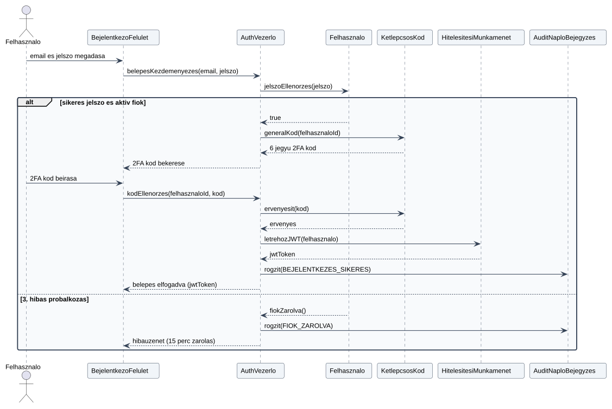
A Felhasznalo fiókstátuszának életciklusát az alábbi állapotdiagram szemlélteti:
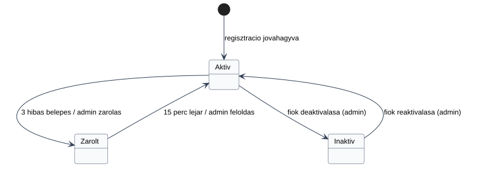
A kétlépcsős azonosítás és a fiókzárolás döntési logikáját (megbízható böngésző ellenőrzése, Bcrypt összehasonlítás, számláló növelése és audit naplózás) az alábbi aktivitásdiagram írja le:
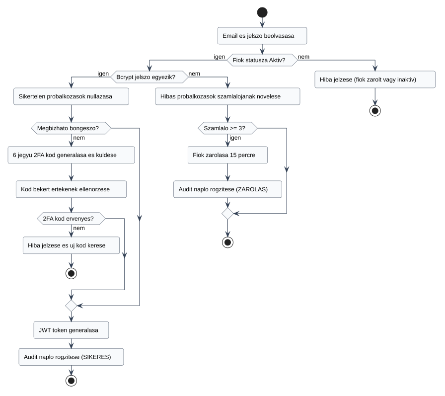
A szekvencia- és aktivitásdiagramok alapján azonosítottuk a jelszoEllenorzes(), fiokZarol(), fiokFelold(), ervenyesit() (2FA), ervenyesE() (JWT), valamint az audit naplóbejegyzést létrehozó rogzit() operációkat.
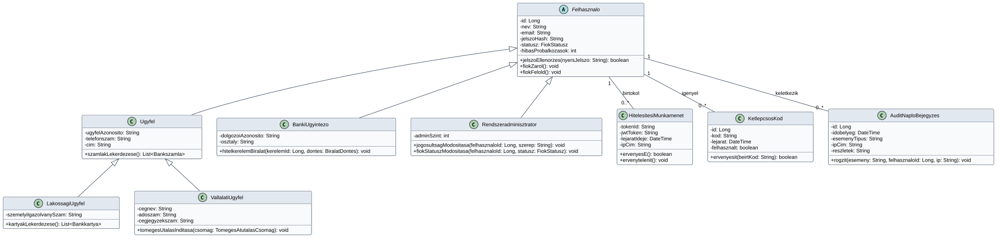
| Név | Típus | Leírás |
|---|---|---|
| id | Long | Egyedi adatbázis-azonosító. |
| nev | String | A felhasználó teljes neve. |
| String | Bejelentkezéshez használt egyedi e-mail cím. | |
| jelszoHash | String | Bcrypt algoritmussal (salt ≥ 12) tárolt jelszólenyomat. |
| statusz | FiokStatusz | A fiók állapota (AKTIV, ZAROLT, INAKTIV). |
| hibasProbalkozasok | int | Egymást követő sikertelen belépési kísérletek száma. |
| Név | Argumentumok | Működése, feladata |
|---|---|---|
| jelszoEllenorzes | nyersJelszo: String | Ellenőrzi a megadott jelszót a tárolt Bcrypt hash alapján; 3 hiba után zárol. |
| fiokZarol | - | A fiók státuszát ZAROLT állapotba állítja. |
| fiokFelold | - | Visszaállítja az AKTIV státuszt és nullázza a hibaszámlálót. |
| Név | Típus | Leírás |
|---|---|---|
| ugyfelAzonosito | String | Egyedi banki ügyfél-azonosító kód. |
| telefonszam | String | 2FA és értesítések küldésére szolgáló telefonszám. |
| cim | String | Lakcím vagy céges székhely. |
| Név | Argumentumok | Működése, feladata |
|---|---|---|
| szamlakLekerdezese | - | Visszaadja az ügyfélhez tartozó aktív bankszámlák listáját. |
| Név | Típus | Leírás |
|---|---|---|
| szemelyiIgazolvanySzam | String | Az ügyfél személyazonosító okmányának száma. |
| Név | Argumentumok | Működése, feladata |
|---|---|---|
| kartyakLekerdezese | - | Lekéri a lakossági ügyfél számláihoz kapcsolt bankkártyákat. |
| Név | Típus | Leírás |
|---|---|---|
| cegnev | String | A vállalkozás hivatalos neve. |
| adoszam | String | A vállalkozás adószáma. |
| cegjegyzekszam | String | A vállalkozás cégjegyzékszáma. |
| Név | Argumentumok | Működése, feladata |
|---|---|---|
| tomegesUtalasInditasa | csomag: TomegesAtutalasCsomag | Elindítja egy jóváhagyott tömeges utalási csomag feldolgozását. |
| Név | Típus | Leírás |
|---|---|---|
| dolgozoiAzonosito | String | Belső banki munkatárs-azonosító. |
| osztaly | String | Az ügyintéző szervezeti egysége (pl. Hitelbírálat). |
| Név | Argumentumok | Működése, feladata |
|---|---|---|
| hitelkerelemBiralat | kerelemId: Long, dontes: BiralatDontes | Rögzíti a hitelkérelemre vonatkozó döntést és elindítja a folyósítást. |
| Név | Típus | Leírás |
|---|---|---|
| adminSzint | int | Adminisztrátori jogosultsági szint. |
| Név | Argumentumok | Működése, feladata |
|---|---|---|
| jogosultsagModositasa | felhasznaloId: Long, szerep: String | Módosítja a kiválasztott felhasználó szerepkörét (saját jog visszavonása tiltott). |
| fiokStatuszModositasa | felhasznaloId: Long, statusz: FiokStatusz | Aktiválja, inaktiválja vagy feloldja a felhasználói fiókot. |
| Név | Típus | Leírás |
|---|---|---|
| tokenId | String | A token egyedi azonosítója (jti). |
| jwtToken | String | HMAC SHA-256 aláírt JWT karakterlánc. |
| lejaratIdeje | DateTime | A token érvényességének lejárati időpontja. |
| ipCim | String | A kliens IP-címe a belépéskor. |
| Név | Argumentumok | Működése, feladata |
|---|---|---|
| ervenyesE | - | Ellenőrzi, hogy a token nem járt-e le és nincs-e visszavonva. |
| ervenytelenit | - | Kijelentkezéskor érvényteleníti a munkamenetet. |
| Név | Típus | Leírás |
|---|---|---|
| id | Long | Egyedi azonosító. |
| kod | String | 6 számjegyű ellenőrző kód. |
| lejarat | DateTime | A kód érvényességi határideje. |
| felhasznalt | boolean | Jelzi, hogy a kódot már felhasználták-e. |
| Név | Argumentumok | Működése, feladata |
|---|---|---|
| ervenyesit | beirtKod: String | Összeveti a beírt kódot, ellenőrzi a lejáratot és felhasználtnak jelöli. |
| Név | Típus | Leírás |
|---|---|---|
| id | Long | Egyedi naplórekord-azonosító. |
| idobelyeg | DateTime | Az esemény bekövetkezésének pontos ideje. |
| esemenyTipus | String | Eseménykód (pl. BEJELENTKEZES, ATUTALAS, LIMIT_MODOSITAS). |
| ipCim | String | A műveletet kezdeményező kliens IP-címe. |
| reszletek | String | Szöveges vagy JSON leírás az esemény paramétereiről. |
| Név | Argumentumok | Működése, feladata |
|---|---|---|
| rogzit | esemeny: String, felhasznaloId: Long, ip: String | Új, utólag nem módosítható naplóbejegyzést ment az adatbázisba. |
Egy Ugyfel legalább egy Bankszamla tulajdonosa (1 – 1..*). A TomegesAtutalasCsomag és a TomegesAtutalasTetel között erős kompozíciós kapcsolat (1 – 1..*) áll fenn, mivel a tételek a csomag nélkül nem értelmezhetők. Minden végrehajtott tétel létrehoz egy könyvelt Tranzakcio rekordot.
Az SRS szerint meg kell különböztetni az elerhetoEgyenleg és a konyveltEgyenleg értékeket, valamint a Bankkartya napi vásárlási és készpénzfelvételi limitjeit. A kártyaszám biztonsági okokból maszkolt formában (kartyaSzamMaszkolt) jelenik meg.
A számlamozgások közös mezőit (összeg, devizanem, közlemény, időbélyeg, státusz) és az ACID könyvelési/visszagörgetési logikát a Tranzakcio absztrakt bázisosztályba emeltük ki, amelyből az EsetiAtutalas származik.
Az UC-03: Belföldi eseti átutalás indítása folyamatát (beleértve a CDV-ellenőrzést, a fedezetvizsgálatot, az opcionális devizakonverziót és az audit naplózást) az alábbi szekvenciadiagram mutatja be:
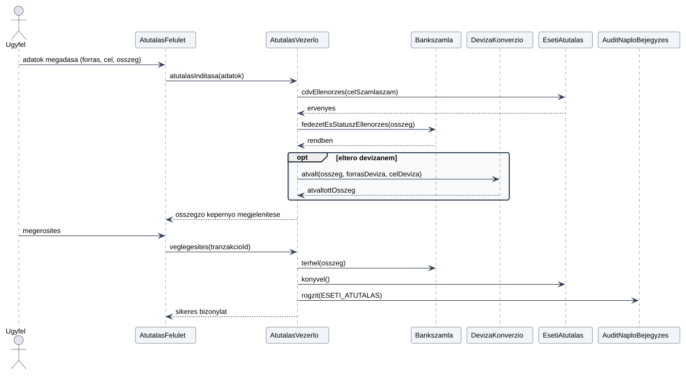
A Bankkartya állapotváltozásait (aktív, ideiglenesen zárolt, véglegesen letiltott, lejárt) az alábbi állapotdiagram írja le:
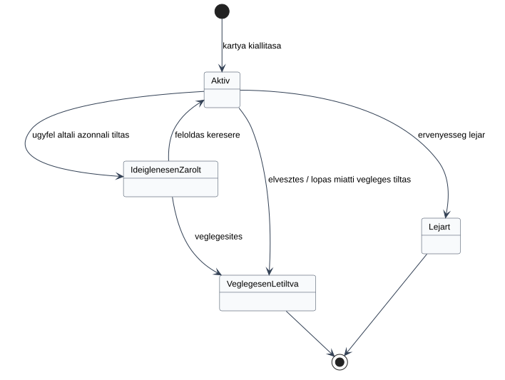
A tömeges átutalási csomag (UC-04) feldolgozásának fő lépései:
TomegesAtutalasCsomag.csvFeldolgozas() minden sorra létrehoz egy TomegesAtutalasTetel objektumot, és meghívja a validal() metódust (24 jegyű CDV-ellenőrzés).osszOsszeg értéket.osszesitettFedezetEllenorzes() ellenőrzi, hogy a forrásszámla elérhető egyenlege fedezi-e a teljes csomagot.kotegeletVegrehajtas() egy adatbázis-tranzakcióban könyveli az egyes tételeket és audit naplót készít.Azonosított fő műveletek: fedezetEllenorzes(), terhel(), jovair(), cdvEllenorzes(), konyvel(), visszagorget(), pdfGeneralas(), limitModositasa(), zarolas().
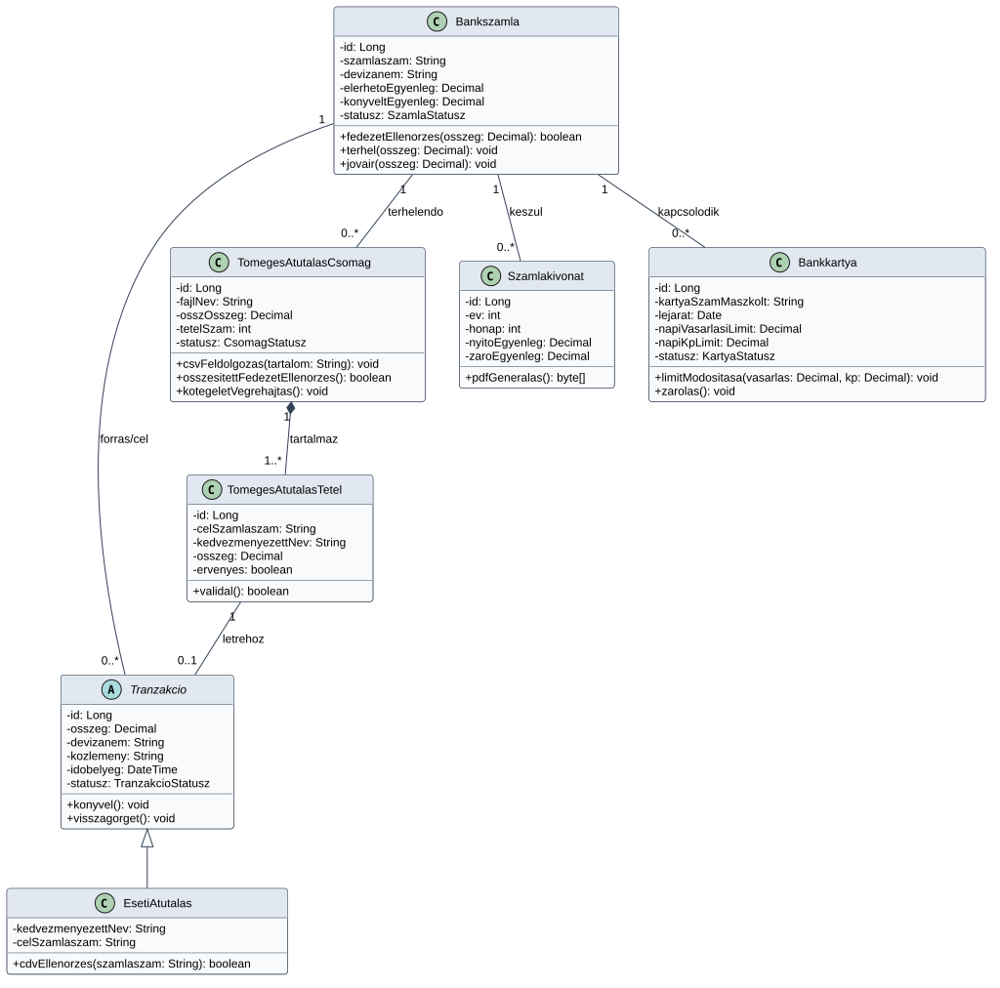
| Név | Típus | Leírás |
|---|---|---|
| id | Long | Egyedi adatbázis-azonosító. |
| szamlaszam | String | 24 jegyű belföldi számlaszám. |
| devizanem | String | A számla pénzneme (HUF, EUR, USD). |
| elerhetoEgyenleg | Decimal | A szabadon elkölthető egyenleg. |
| konyveltEgyenleg | Decimal | A könyvelt tételek szerinti egyenleg. |
| statusz | SzamlaStatusz | Számla állapota (AKTIV, ZAROLT, INKASSZO_ALATT). |
| Név | Argumentumok | Működése, feladata |
|---|---|---|
| fedezetEllenorzes | osszeg: Decimal | Megvizsgálja, hogy a számla aktív-e és van-e elegendő szabad egyenleg. |
| terhel | osszeg: Decimal | Csökkenti a számla egyenlegét a megadott összeggel. |
| jovair | osszeg: Decimal | Növeli a számla egyenlegét a megadott összeggel. |
| Név | Típus | Leírás |
|---|---|---|
| id | Long | Egyedi tranzakció-azonosító. |
| osszeg | Decimal | A tranzakció összege. |
| devizanem | String | A tranzakció pénzneme. |
| kozlemeny | String | Opcionális közlemény szöveg. |
| idobelyeg | DateTime | A könyvelés időpontja. |
| statusz | TranzakcioStatusz | FELDOLGOZAS_ALATT, KONYVELT, ELUTASITVA. |
| Név | Argumentumok | Működése, feladata |
|---|---|---|
| konyvel | - | Véglegesíti a tranzakciót az adatbázisban. |
| visszagorget | - | Hiba esetén visszavonja a terhelést/jóváírást (rollback). |
| Név | Típus | Leírás |
|---|---|---|
| kedvezmenyezettNev | String | A fogadó fél neve. |
| celSzamlaszam | String | A kedvezményezett 24 jegyű számlaszáma. |
| Név | Argumentumok | Működése, feladata |
|---|---|---|
| cdvEllenorzes | szamlaszam: String | Lefuttatja a CDV ellenőrző algoritmust a célszámlaszámon. |
| Név | Típus | Leírás |
|---|---|---|
| id | Long | Csomag egyedi azonosítója. |
| fajlNev | String | A feltöltött CSV állomány neve. |
| osszOsszeg | Decimal | Az érvényes tételek végösszege. |
| tetelSzam | int | A csomagban lévő tételek darabszáma. |
| statusz | CsomagStatusz | FELTOLTVE, ELLENORIZVE, VEGREHAJTVA. |
| Név | Argumentumok | Működése, feladata |
|---|---|---|
| csvFeldolgozas | tartalom: String | Beolvassa a CSV sorokat és létrehozza a tételobjektumokat. |
| osszesitettFedezetEllenorzes | - | Ellenőrzi, hogy a forrásszámlán megvan-e a teljes csomagösszeg. |
| kotegeletVegrehajtas | - | Tranzakciónként végrehajtja a jóváhagyott tételeket. |
| Név | Típus | Leírás |
|---|---|---|
| id | Long | Egyedi tétel-azonosító. |
| celSzamlaszam | String | Kedvezményezett számlaszáma. |
| kedvezmenyezettNev | String | Kedvezményezett neve. |
| osszeg | Decimal | Az utalandó összeg. |
| ervenyes | boolean | A formai és CDV-validáció eredménye. |
| Név | Argumentumok | Működése, feladata |
|---|---|---|
| validal | - | Ellenőrzi a számlaszámot és a pozitív összeget. |
| Név | Típus | Leírás |
|---|---|---|
| id | Long | Kivonat azonosítója. |
| ev | int | A kivonat éve. |
| honap | int | A kivonat hónapja. |
| nyitoEgyenleg | Decimal | Időszak eleji egyenleg. |
| zaroEgyenleg | Decimal | Időszak végi egyenleg. |
| Név | Argumentumok | Működése, feladata |
|---|---|---|
| pdfGeneralas | - | Összeállítja és bájtfolyamként visszaadja a formázott PDF kivonatot. |
| Név | Típus | Leírás |
|---|---|---|
| id | Long | Kártya azonosítója. |
| kartyaSzamMaszkolt | String | Maszkolt kártyaszám (pl. **** **** **** 1234). |
| lejarat | Date | A kártya lejárati dátuma. |
| napiVasarlasiLimit | Decimal | Napi maximum vásárlási keret. |
| napiKpLimit | Decimal | Napi maximum készpénzfelvételi keret. |
| statusz | KartyaStatusz | AKTIV, IDEIGLENESEN_ZAROLT, VEGL_LETILTVA, LEJART. |
| Név | Argumentumok | Működése, feladata |
|---|---|---|
| limitModositasa | vasarlas: Decimal, kp: Decimal | Beállítja az új napi limiteket a banki maximumon belül. |
| zarolas | - | Azonnal ideiglenesen zárolja a kártyát. |
Az ArfolyamFrissitoSzolgaltatas egyetlen KulsoArfolyamKliens segítségével kommunikál a külső REST API-val, és időbélyeggel ellátott DevizaArfolyam rekordokat hoz létre. Minden DevizaKonverzio az adott pillanatban érvényes DevizaArfolyam rekordra támaszkodik.
Az UC-07 és UC-10 alapján felvettük a veteliArfolyam, eladasiArfolyam, kozepArfolyam és frissitesIdeje mezőket, valamint a marzsszámításhoz szükséges marzsSzazalek paramétert.
Az alrendszer osztályai eltérő szerepkörűek (adatentitás, időzített szolgáltatás, külső kliens), így nem indokolt közös bázisosztály bevezetése.
Az UC-10: Árfolyamok automatikus frissítése folyamatot (beleértve a külső API hiba esetén történő fallback működést) az alábbi szekvenciadiagram szemlélteti:
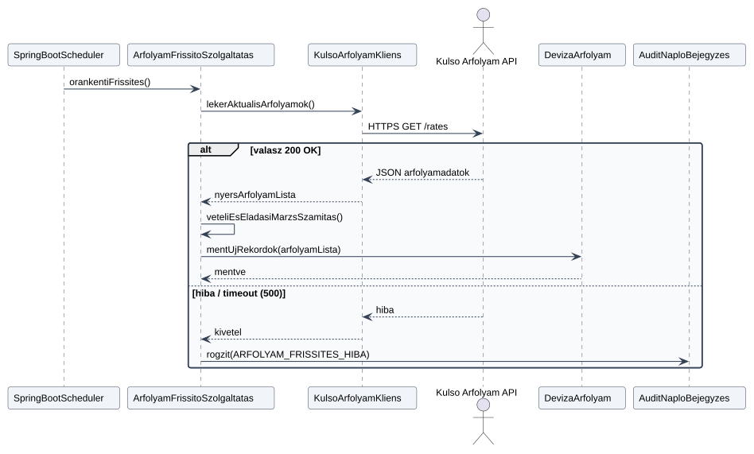
Ha egy átutalásnál a forrásszámla és a céldeviza eltér (<<extend>> Devizakonverzió), a DevizaKonverzio.atvalt() lekéri a legfrissebb érvényes DevizaArfolyam eladási árfolyamát, kiszámítja az átváltott összeget, és a bizonylaton mindkét értéket rögzíti. Külső API kiesés esetén a rendszer az utolsó érvényes árfolyamot használja és riasztást naplóz.
Azonosított operációk: orankentiFrissites(), marzsSzamitas(), lekerAktualisArfolyamok(), atvalt(), napiValtozasSzazalek().
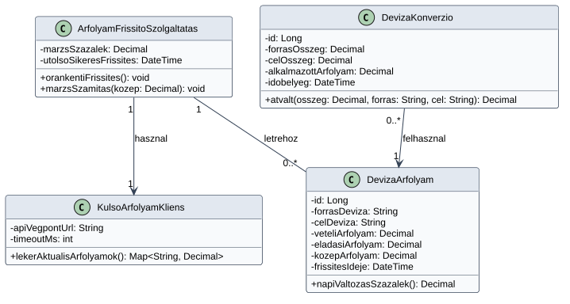
| Név | Típus | Leírás |
|---|---|---|
| id | Long | Egyedi azonosító. |
| forrasDeviza | String | Alap devizanem (pl. EUR, USD, CHF, GBP). |
| celDeviza | String | Cél devizanem (pl. HUF). |
| veteliArfolyam | Decimal | Banki vételi árfolyam. |
| eladasiArfolyam | Decimal | Banki eladási árfolyam. |
| kozepArfolyam | Decimal | Piaci középárfolyam. |
| frissitesIdeje | DateTime | Az árfolyam rögzítésének időbélyege. |
| Név | Argumentumok | Működése, feladata |
|---|---|---|
| napiValtozasSzazalek | - | Kiszámítja az előző napi záróárhoz viszonyított százalékos eltérést. |
| Név | Típus | Leírás |
|---|---|---|
| marzsSzazalek | Decimal | A banki vételi/eladási sávot meghatározó marzs. |
| utolsoSikeresFrissites | DateTime | A legutóbbi sikeres szinkronizáció időpontja. |
| Név | Argumentumok | Működése, feladata |
|---|---|---|
| orankentiFrissites | - | Óránként lefutva lekéri és elmenti az új árfolyamokat. |
| marzsSzamitas | kozep: Decimal | Kiszámítja a vételi és eladási értéket a középárfolyamból. |
| Név | Típus | Leírás |
|---|---|---|
| apiVegpontUrl | String | A külső REST API címe. |
| timeoutMs | int | Hálózati időtúllépési határ milliszekundumban. |
| Név | Argumentumok | Működése, feladata |
|---|---|---|
| lekerAktualisArfolyamok | - | HTTPS GET hívást indít és feldolgozza a JSON választ. |
| Név | Típus | Leírás |
|---|---|---|
| id | Long | Konverzió azonosítója. |
| forrasOsszeg | Decimal | Átváltandó összeg. |
| celOsszeg | Decimal | Átváltott összeg. |
| alkalmazottArfolyam | Decimal | A műveletkor használt eladási árfolyam. |
| idobelyeg | DateTime | A konverzió időpontja. |
| Név | Argumentumok | Működése, feladata |
|---|---|---|
| atvalt | osszeg: Decimal, forras: String, cel: String | Kiszámítja az átváltott összeget az aktuális árfolyam alapján. |
Egy Ugyfel több Hitelkerelem példányt is benyújthat. Minden Hitelkerelem legfeljebb egy HitelBiralat objektumhoz kapcsolódik (1 – 0..1), és csak a jóváhagyott bírálat eredményez egy HitelSzerzodes példányt (0..1 – 0..1).
Az UC-08 és UC-09 alapján a Hitelkerelem tartalmazza az igenyeltOsszeg, futamidoHonap, haviNettoJovedelem és munkaltatoNeve mezőket, míg a HitelBiralat a dontes, indoklas és digitalisAlairas mezőket.
A négy osztály eltérő életciklusú és felelősségű (kérelem, kalkulátor, bírálat, szerződés), így közös bázisosztály nem szükséges.
Az UC-09: Hitelkérelem elbírálása folyamatát az alábbi szekvenciadiagram mutatja be:
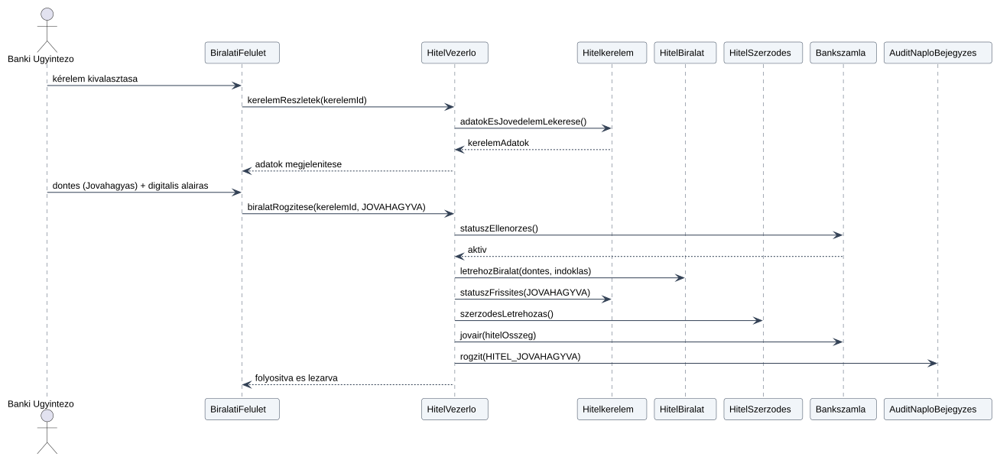
A Hitelkerelem lehetséges állapotait és átmeneteit az alábbi állapotdiagram írja le:
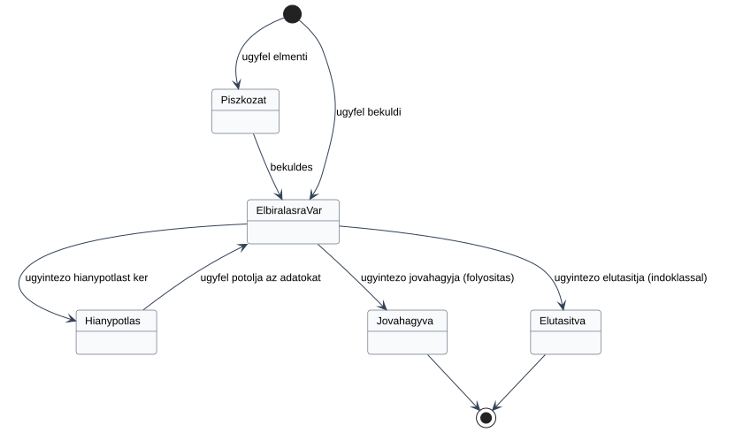
A hiteligénylés során a HitelKalkulator valós időben számolja a várható havi törlesztőrészletet és a THM-et. Beküldés előtt a Hitelkerelem.jtmEllenorzes() megvizsgálja, hogy a törlesztőrészlet nem haladja-e meg a jogszabályi jövedelemarányos törlesztési mutatót (JTM). Jóváhagyáskor a rendszer ellenőrzi, hogy az ügyfél célszámlája nem került-e zárolásra, majd létrehozza a HitelSzerzodes rekordot és jóváírja az összeget.
Azonosított operációk: piszkozatMentese(), bekuldes(), jtmEllenorzes(), haviTorlesztoSzamitas(), thmSzamitas(), veglegesit(), folyositasInditasa().
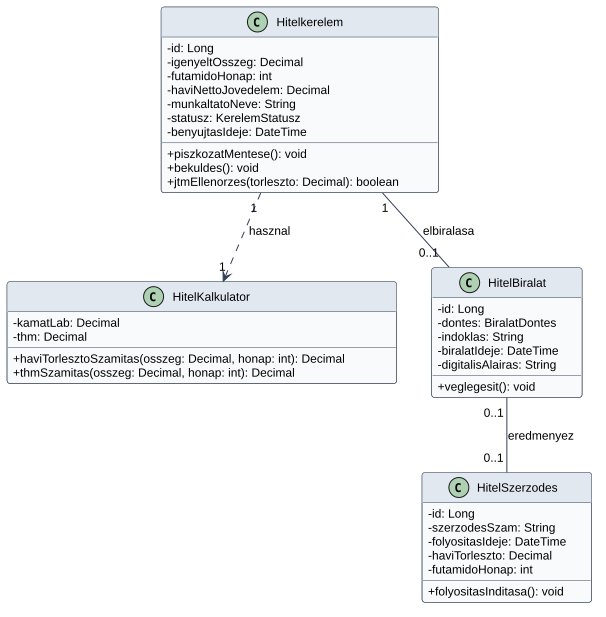
| Név | Típus | Leírás |
|---|---|---|
| id | Long | A hitelkérelem egyedi azonosítója. |
| igenyeltOsszeg | Decimal | Az igényelt hitel összege. |
| futamidoHonap | int | A választott futamidő hónapokban. |
| haviNettoJovedelem | Decimal | Az igénylő igazolt havi nettó jövedelme. |
| munkaltatoNeve | String | A munkáltató megnevezése. |
| statusz | KerelemStatusz | PISZKOZAT, ELBIRALASRA_VAR, HIANYPOTLAS, JOVAHAGYVA, ELUTASITVA. |
| benyujtasIdeje | DateTime | A végleges beküldés időpontja. |
| Név | Argumentumok | Működése, feladata |
|---|---|---|
| piszkozatMentese | - | Elmenti a félig kitöltött kérelmet későbbi folytatáshoz. |
| bekuldes | - | Validálás után elbírálásra váró státuszba állítja a kérelmet. |
| jtmEllenorzes | torleszto: Decimal | Ellenőrzi a jövedelemarányos törlesztési mutató teljesülését. |
| Név | Típus | Leírás |
|---|---|---|
| kamatLab | Decimal | Éves ügyleti kamatláb. |
| thm | Decimal | Teljes Hiteldíj Mutató. |
| Név | Argumentumok | Működése, feladata |
|---|---|---|
| haviTorlesztoSzamitas | osszeg: Decimal, honap: int | Annuitásos képlettel kiszámítja a havi törlesztőt. |
| thmSzamitas | osszeg: Decimal, honap: int | Kiszámítja a teljes hiteldíj mutatót. |
| Név | Típus | Leírás |
|---|---|---|
| id | Long | Bírálat azonosítója. |
| dontes | BiralatDontes | JOVAHAGYAS, ELUTASITAS, HIANYPOTLAS. |
| indoklas | String | Szöveges indoklás (elutasítás vagy hiánypótlás esetén kötelező). |
| biralatIdeje | DateTime | A döntés időpontja. |
| digitalisAlairas | String | Az ügyintéző megerősítő digitális aláírása. |
| Név | Argumentumok | Működése, feladata |
|---|---|---|
| veglegesit | - | Lezárja a bírálatot és frissíti a kérelem státuszát. |
| Név | Típus | Leírás |
|---|---|---|
| id | Long | Szerződés azonosítója. |
| szerzodesSzam | String | Egyedi banki hitelszerződés-szám. |
| folyositasIdeje | DateTime | A hitelösszeg jóváírásának időpontja. |
| haviTorleszto | Decimal | Rögzített havi törlesztőrészlet. |
| futamidoHonap | int | Szerződéses futamidő hónapokban. |
| Név | Argumentumok | Működése, feladata |
|---|---|---|
| folyositasInditasa | - | Jóváírja a hitelösszeget az ügyfél aktív bankszámláján. |